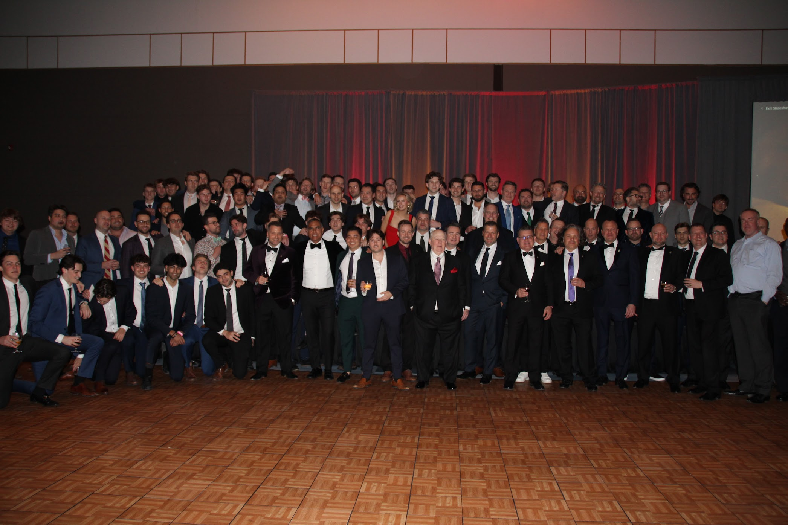

Our Mission
To establish the foundational elements, the core essentials, to foster core Pike values and enable the best Scholars, Leaders, Athletes and Gentlemen.
Our Impact
Provide mentorship, guidance and financial support in order to help young men develop and grow through their undergrad experience.
Get Involved
Sign up as an alumni or active to join us in making a difference. Volunteer, donate, or participate in our programs.